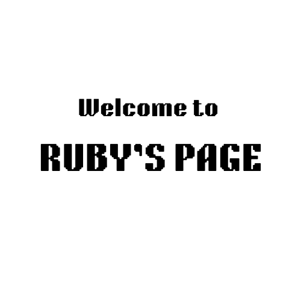

About Me
Hellooo I’m Ruby and I’m studying film and digital media. I like to take photos of people and listen to music. I also enjoy hiking in the woods, going to the beach, and prolonged rumination.

Hellooo I’m Ruby and I’m studying film and digital media. I like to take photos of people and listen to music. I also enjoy hiking in the woods, going to the beach, and prolonged rumination.